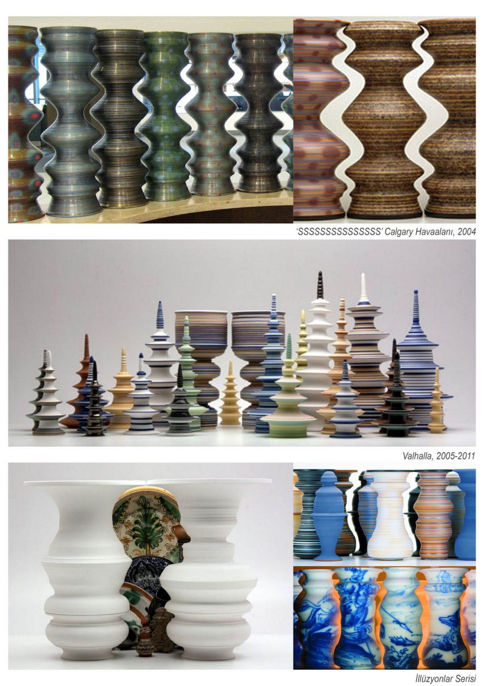

+++
title = "Tasarımda Malzeme: Seramik"
seotitle="Seramik Tasarımları, Üretimi ve Tasarımcıları"
description="Seramik günlük yaşantımızda sıklıkla ortaya çıkan bir ürün malzemesidir. Bu sayımızda ünlü seramik tasarımcılarına, tasarımlarına ve üretimine değindik."
url="sayi-6/tasarimda-malzeme-seramik"
aciklama="Seramik günlük yaşantımızda evimizin pek çok yerinde ortaya çıkan bir ürün malzemesi olmaktan kaçamıyor. Akşam yemeklerimizde tamamlayıcı bir görsel etki yaratan tabaklarımızda veya her gün suladığımız çiçeklerimizde dekoratif bir etki yaratan saksılarımızda seramiği sıkça görmek mümkün."
type="sayfa"
thumb="/img/tasarimda-seramik-thumbnail.jpg"
date = "2021-02-05"
sayi=["06"]
sayfa="02"
yazar=["eylul ecem sogutlu"]
tags= ["dergi", "tasarimda malzeme"]
+++

<div class="container">
   <p>
      Seramik günlük yaşantımızda evimizin pek çok yerinde ortaya çıkan bir ürün
      malzemesi olmaktan kaçamıyor. Akşam yemeklerimizde tamamlayıcı bir görsel
      etki yaratan tabaklarımızda veya her gün suladığımız çiçeklerimizde
      dekoratif bir etki yaratan saksılarımızda seramiği sıkça görmek mümkün.
      Peki ya nedir bu seramik ve nasıl üretilir? Dilerseniz seramiğin evimize
      gelene kadar geçirdiği bu serüvene bir göz atalım.
   </p>
   <p>
      Seramik denince izlenebilecek iki ana üretim sürecinden bahsetmek mümkün.
      Bunlar ; Çömlekçilik Çarkı Yöntemi ve Kayma Döküm Yöntemi.
   </p>

   <h2>Çömlekçilik Çarkı Yöntemi</h2>
   <div class="row">
      <div class="col-md-6">
         {{}}
      </div>
      <div class="col-md-6">
         <p>
           <b>Adım 1:</b>  Kilin Kesilmesi Bu adım sırasında, düşük veya yüksek alevli
            belirli bir kil türü seçilir ve kalıplama işlemi için doğru miktarda
            çamur elde etmek için kesilir. <br><b> Adım 2:</b> Yuvarlama Bu adım sırasında
            kil, bir çömlek çarkına yerleştirilir. Bir çömlekçi daha sonra çanak
            çömlek çarkını döndürerek ve çamuru kalıplayarak istenen ürünün
            şeklini elle oluşturacaktır. Bu, malzemenin kolay deformasyonu
            nedeniyle herhangi bir geometrik şeklin oluşturulabilmesini sağlar.
            <br><b>Adım 3:</b> Birleştirme İstenilen yapıya göre oluşturulan sap vb.
            birleşmesi gereken parçalar, direkt temas yöntemi kullanılarak çamur
            çanağına bağlanacaktır. Bu yöntem, iki parçayı birbirine
            karıştırmayı ve ardından bir arada tutmak için sirkeyi ve suyu
            yapıştırıcı olarak kullanmayı gerektirir.
            <br><b>Adım 4:</b> Ateşleme Bu
            aşamada oluşturulan ürün, istenen şeye bağlı olarak belirli
            özellikler oluşturmak için yüksek sıcaklıklarda ısıtılacaktır.
         </p>
         <p>
            Bu aşamaları daha sonra soğutma, dekorasyon ve tekrarlanan fırınlama
            takip eder.
         </p>
      </div>
   </div>

   <hr >

   <div class="row">
      <h2>Kayma Döküm Yöntemi (Slipcasting)</h2>
      <p>
         Slipcasting veya slip döküm, çanak çömlek ve diğer seramikler için,
         özellikle bir tekerlek üzerinde kolayca yapılamayan şekiller için bir
         seramik şekillendirme tekniğidir. Bu yöntem, kahve fincanları gibi kısa
         sürede büyük miktarlarda üretilmesi gereken daha endüstriyel işlemler
         için kullanılır.
      </p>
      <div class="col-md-6">
         {{}}
      </div>
      <div class="col-md-6"><br>
         <b>Adım 1: Prototip ve Kalıp Oluşturma</b>
         <p>
            Prototip, alçı veya plastikten, zarar görmeyeceği için tercih edilen
            seçenek olarak plastik ile oluşturulur. Prototip, elle yapılmış veya
            bir malzeme bloğuna oyulmuş olabilir.
         </p>
         <b>Adım 2: Kayma Döküm</b>
         <p>
            Taş, çanak çömlek ve porselen malzemeler kil sıvı hale gelene kadar
            su ile seyreltilir. Bu sıvı daha sonra alçı kalıplara dökülür. Bu,
            geometrik şekillerin oluşturulmasını kolaylaştırır. Kil sertleşmeye
            bırakılır ve fazla nem sıva ile alınır. Bu, yoğun yapıdan dolayı
            ürünün kurutma sırasında aşırı büzülmesini önleyecektir. Kil
            sertleştiğinde kalıplar çıkarılacaktır.
         </p>
      </div>
   </div>

   <b>Adım 3: Ateşleme</b>
   <p>
      Sertleştirilmiş kil daha sonra, kullanılan özel malzemelere bağlı olarak
      1064-1416 ℃ arasında değişen pişirme sıcaklıklarında kahve fincanlarını
      ateşlemek için yüksek sıcaklık fırınlarına yerleştirilecektir. Değerler,
      yukarıdaki Çömlekçilik Çarkı Yöntemi ile aynıdır. Bu adım 2 ila 12 saat
      sürecektir.
   </p>
   <b>Adım 4: Sırlama ve İkinci Pişirme</b>
   <p>
      İlk pişirme adımından sonra kahve fincanları son derece sıcaktır ve
      soğumaya bırakılacaktır. Soğuduktan sonra sırlanır bu da fincana renk ve
      parlak bir doku katar; ürünler eşit bir renge, desenlere veya çizimlere
      sahip olabilir. Bu işlem kahve fincanının su geçirmez olmasını sağlar.
      Sırlama işleminden sonra ürünler, sır türüne ve kullanılan ilk malzemelere
      bağlı olarak tekrar pişirilecektir.
   </p>
   <br >
   <br >
   <hr >
   <p>
      Dilerseniz seramik alanında çalışmalarıyla ismini geniş kitlelere duyurmuş
      ve akıllarda yer etmiş 8 değerli seramik sanatçısına ve eserlerine bir göz
      atalım.
   </p>
   <h2>Füreya Koral</h2>
   <div class="row">
      <div class="col-md-4">
         {{}}
         <blockquote>
            <p>
               “Türk sanatının bütün bir köşesini dolduran büyük ve feyizli bir
               mevsime benzer. Yeri belki de hiç doldurulmayacak kadar özel bir
               mevsimdir Füreya” diyordu Ahmet Hamdi Tanpınar.
            </p>
         </blockquote>
      </div>
      <div class="col-md-8">
         <p>
            Cumhuriyet&#39;in ilk kadın seramik sanatçısı Füreya; 2 Haziran 1910
            yılında Büyükada&#39;da doğdu.1947&#39;de İsviçre&#39;de öğrenmeye
            başladığı bu sanatı Paris&#39;te iki yıl çeşitli atölyelerde
            geliştirdikten sonra sanatını Türkiye&#39;de hayata geçirdi ve ilk
            Türk profesyonel kadın seramik sanatçısı oldu.
         </p>
         <p>
            1945 de kendisine verem teşhisi konulduğunda tedavi süreci boyunca
            oyalanması için Londra&#39;da yaşayan teyzesi Fahrelnisa Zeid ona
            seramik araç-gereçleri gönderdi. Ve böylece hasta yatağında, hüzünlü
            Füreya ilk kez kendisini ciddi bir uğraş ile seramiğin içerisinde
            buldu. Koral, ilk sergisini 1951 yılında Paris&#39;te açtığında
            seramiğin sanat olarak sergilenmesi batıda da yeni bir olguydu.
            Koral&#39;ın litografi çalışmaları, içeriği ve biçimsel özellikleri
            dönemin batı sanatı içerisinde hayli ilgi uyandırdı. Eserlerinin
            doğu kültürünün bazı simgelerini, kimliklerini taşıması, seramiğe
            zanaatla sanatı birleştiren anlatımsal yaklaşımı, yenilik ve
            orijinallik olarak algılandı.
         </p>
         <p>
            1956 yılından sonra duvarlar için seramik çalışmalarına yöneldi.
            Fırında yüksek dereceye ayarlanmış çalışmaların sonucunda bulduğu
            “gre” kil ile eserler yarattı ve seramik karo sanatını da çağdaş bir
            yorumla Türk mimarisine getirdi. Bu tutumu 1950&#39;lere kadar Batı
            dünyasında bile yaygın değildi.
         </p>
         <p>
            Atatürk&#39;le tanışıklığı ve hayranlığı gençlik yıllarına dayanan
            Füreya Koral&#39;ın sanatına hayran kalan Atatürk&#39;ün
            Füreya&#39;nın defterine yazmış olduğu şöyle bir yazısı var:
            “Görüyorum ki çok çalışkan bir insansınız. Millet sizden çok şey
            bekliyor. Siz çalışıp bir şeyler vermelisiniz memlekete.”
         </p>
         {{}}
      </div>
   </div>

   <br >
   <br >
   <hr >
   <h2>Sadi Diren</h2>
   <div class="row">
      <div class="col-md-4">
         {{}}
         <blockquote>
            <p>“Seramiği tamamıyla tesadüf olarak seçtim”</p>
         </blockquote>
      </div>
      <div class="col-md-8">
         <p>
            1927 İstanbul doğumlu Sadi Diren Devlet Güzel Sanatlar Akademisi
            Seramik Bölümünü 1952’de bitirdi. İlk sergisini 1953’te İstanbul’da
            Maya Sanat’ta açtı.1955&#39;te Almanya&#39;ya giden sanatçı, orada
            kaldığı dokuz yıl boyunca sadece sanat seramiğinin değil, endüstri
            seramiğini de sorgulama, çözme ve çeşitli şekillerde kullanma
            olanağı buldu.1964&#39;te Türkiye&#39;ye geri döndüğü Almanya
            macerasından sonra Eczacıbaşı Seramik Fabrikaları&#39;nda süs ve
            mutfak eşyaları kısmına müdür ve sanatçı olarak çalışmaya başladı.
            İstanbul Devlet Güzel Sanatlar Akademisi&#39;ne öğretim üyeliği,
            Mimar Sinan Üniversitesi Güzel Sanatlar Fakültesi dekanlığı gibi
            görevleri bulunan Sadi Diren 2018 yılında hayata gözlerini yumdu.
         </p>
         <p>
            Yarısı yurt dışında olmak üzere birçok sergi düzenleyen Sadi
            Diren&#39;in kimi yapıtları, Düsseldorf Hetjent Museum, Avrupa
            Parlamento Binası ve Türkiye&#39;de de Devlet Resim ve Heykel
            Müzesi&#39;ne, İstanbul Cumhurbaşkanlığı Köşkü’ne alındı. Sanatçı İş
            Sanat Kibele Galerisi’ndeki toplu sergisi ile 2009 Sedat Simavi
            Görsel Sanatlar Ödülü&#39;nü aldı.
         </p>
         <p>
            Yurt dışındaki süreçte, ‘biçimlerde sadelik, yüzeylerde süslemenin
            ön planda uygulandığı’ yapıtlarını, 1960-1963 arası ise seramikte
            ‘ilk duvar resimleri’ döneminde ürettiği çalışmalarını görmek
            mümkün. Özgün, çeşitli sır tekniklerine ait buluşları, onun bu
            dönemlerinin yapıtlarında görülür. Sanatının temelinde eski ve köklü
            Sırlı, sırsız seramikte, figürde, bronz heykellerinde Anadolu
            kültürü bulunur.
         </p>
         <p>
            {{}}
         </p>
      </div>
   </div>

   <hr >
   <h2>Bedri Rahmi Eyüboğlu</h2>
   <div class="row">
      <div class="col-md-4">
         {{}}
         <blockquote>
            <p>
               &quot;Ressamım, yurdumun taşından toprağından sürüp gelir
               nakışlarım. Taşıma, toprağıma toz konduranın alnını
               karışlarım.&quot;
            </p>
         </blockquote>
      </div>
      <div class="col-md-8">
         <p>
            1911 doğumlu olan Bedri Rahmi Eyüboğlu, 1975&#39;te vefat ettiğinde
            64 yaşındaydı. Kendisi hem ressam, hem yazar hem de şairdir. Sanatçı
            kimliği İstanbul Devlet Güzel Sanatlar Akademisi&#39;nde
            başlamıştır. Paris&#39;te sürdürdüğü resim öğreniminin ardından
            yurda dönmüş ve yaşamı boyunca Güzel Sanatlar Akademisinde ders
            vermiştir. Yazma, gravür, seramik, heykel, vitray, mozaik, hat,
            serigrafi, litografi gibi birçok formlarda eserler üreten sanatçı,
            geleneksel süsleme ve halk el sanatlarında seçtiği motifleri
            yapıtlarında Batı’nın teknikleriyle birleştirerek kullandı.
         </p>
         <p>
            1953-1960 arasında resim alanına çalışmalarını büyük boyutlu
            mozaiklerle sürdürdü. Mimari ile diğer güzel sanatlar yapıtlarının
            bir arada kullanılmasının güzel sonuçlar doğuracağına, mimar-sanatçı
            işbirliğinin gerekliliğine inanıyordu ve hayatı boyunca bunu
            savundu.
         </p>
         <p>
            {{}}
         </p>
      </div>
   </div>

   <p></p>

   <hr >
   <h2>Jale Yılmabaşar</h2>
   <div class="row">
      <div class="col-md-4">
         {{}}
         {{}}
         <p>Seramik Yöntemleri</p>
      </div>
      <div class="col-md-8">
         <p>
            Jale Yılmabaşar1939’da Samsun’da doğmuş seramik kariyerine İstanbul
            Devlet Tatbiki Güzel Sanatlar Yüksek Okulu’nun Seramik Bölümü’ne
            girerek başlamıştır. Emekliliğine kadar Marmara Üniversitesi Güzel
            Sanatlar Fakültesi Seramik Bölümü’nde Mimaride Seramik dersleri
            verdi.
         </p>
         <p>
            Seramik çalışmalarında Hitit dönemi figürleri, horoz, kuş, göz gibi
            dönemsel ve yöresel motifleri kullanan sanatçı bir çok duvar panosu
            işlerine imza atmıştır. Türkiye’de seramik yapımını öğreten ilk
            kitabı yazmış sonraki yıllarda özel sektöre ait kimi seramik
            fabrikalarında danışmanlık, sahibi olduğu galerinin yöneticiliği
            işler de yapmıştır. 1972’de İrlanda’da dünyanın en iyi altı
            seramikçisinden biri seçilmiş ve özgün çalışmalarıyla yurtdışında ün
            kazanmıştır. 1998 yılında kendisine Kültür Bakanlığı tarafından
            Devlet Sanatçısı unvanı verilmiştir.
         </p>
         <p>
            {{}}
         </p>
      </div>
   </div>

   <hr >
   <h2>Velimir Vukicevic</h2>
   <div class="row">
      <div class="col-md-4">
         {{}}
         <blockquote>
            <p>
               “Sanat ne statik ne de izoledir. Sürekli bir değişim içindedir.“
            </p>
         </blockquote>
      </div>
      <div class="col-md-8">
         <p>
            Velimir Vukicevic 1950 Yugoslavya doğumlu Sırp seramik sanatçısıdır.
            1969-1974 Belgrad Uygulamalı Sanatlar Akademisi&#39;nden mezun olmuş
            ve aynı okulda 1976&#39;da yüksek lisans eğitimini tamamlamıştır.
            1992&#39;de Sırbistan Belgrad&#39;daki Sanat Akademisi&#39;nin
            seramik bölümünde seramik heykel profesörü seçilmiştir .Babası da
            kendi gibi seramik sanatçısı olan Vukicevic, kendini hatırladığı
            günden beri seramik sanatı ile iç içe büyümüştür. Bu anlamda çoğu
            kişiye göre daha şanslı olduğunu düşünen sanatçı, seramik ile yoluna
            devam edebilmesi için gerekli olan tüm malzemelere sahip bir
            atölyeyle birlikte, ailesinden sonsuz destek almıştır.
         </p>
         <p>
            Sanatçının heykellerine baktığımızda, gerek yapıtın oluşumunda
            kullanılan birimlerin yalınlığı gerekse maksimum etkiyi yaratacak
            şekilde özenle seçilen renk, çizgi, biçim ile gördüğümüz gerçekliğin
            ya da ustaca yaratılmış bizi içine alan optik bir yanılsamanın
            içinde savruluruz. Herhangi bir kavramsal içerik veya bir mesaj
            taşıma endişesi olmaksızın üretebilmenin getirdiği özgürlükle
            hareket eden sanatçı sanatsal öğeleri kendi üslubuyla birleştirerek
            yorumlamıştır.
         </p>
         {{}}
      </div>
   </div>

   <hr >
   <h2>Greg Payce</h2>
   <div class="row">
      <div class="col-md-4">
         {{}}
         <blockquote>
            <p>
               &quot;Formun kenarı profil çizgisidir. Ön plan ile arka planı
               nasıl ayırt ettiğimiz de her zaman oynadığım şeydir.&quot;
            </p>
         </blockquote>
         <iframe width="100%" height="315" src="https://www.youtube.com/embed/FroBcnks9q0" frameborder="0" allow="accelerometer; autoplay; clipboard-write; encrypted-media; gyroscope; picture-in-picture" allowfullscreen></iframe>
      </div>
      <div class="col-md-8">
         <p>
            Greg Payce 1956 doğumlu Kanadalı bir seramik sanatçısıdır. 50 yılı
            aşkın bir süredir deneyimlerini ve tutkularını çömlekçi çarkında
            şekillendirmektedir ve çalışmalarıyla 2013 yılında Saidye Bronfman
            Fine Craft Ödülü&#39; ne layık görülmüştür. Çalışmalarında tasarım,
            film, fotoğraf, felsefe ve tarihten yararlanırken 2004 yılından bu
            yana seramik formları arasındaki negatif boşlukları canlandıran
            videolar üretmek için besteciler ve fotoğrafçılarla işbirliği
            yapmaya başlamıştır. 2007&#39;den beri ise çalışmalarını merceksi
            fotoğrafçılıkla (üç boyutlu plastik lamine kompozit fotoğraflar)
            belgeliyor. Eserlerinin yan yana gelmesi ile oluşan negatif
            boşluklar Payce&#39;nin seramiklerinin illüzyonist, sinematik ve
            mizah açısından zenginliğini ortaya koyuyor. Alberta Sanat ve
            Tasarım Koleji&#39;nde seramik programında eğitmen olarak görev alan
            Payce yıllar boyunca etkilediği sayısız öğrenciye de bu tutkusunu
            aktarmaktadır.
         </p>
         <p>
            {{}}
         </p>
      </div>
   </div>

   <hr >
   <h2>John Glick</h2>
   <div class="row">
      <div class="col-md-4">
         {{}}
         <p>
            JOHN GLICK: KİLDE BİR MİRAS kitabı öğrencilik dönemine kadar uzanan
            ilk kaplar ve sofra takımlarından çalışmalarının tüm aşamalarını
            temsil eden 250 parçayı göstermektedir.
         </p>
         {{}}
         <p>JOHN GLICK: A LEGACY IN CLAY</p>
      </div>
      <div class="col-md-8">
         <p>
            John Glick 1938&#39;de Detroit, Michigan&#39;da doğmuş ve bir halk
            çömlekçisidir. Elli yılı aşkın bir süredir kariyerinde seramik
            ustası olmuş, işlevsel kapların sanatına ve zanaatına ve bunların
            günlük yaşamın ritüellerine dahil edilmesine bağlı kalmıştır. Aynı
            zamanda John Glick, Michigan Farmington Hills&#39;teki Plum Tree
            Pottery&#39;nin sahibi ve işletmecisiydi. Sanatsal deneyime açık
            olmasına rağmen, Glick en çok Asya çanak çömleğinin tarzlarından ve
            estetiğinden etkilenmiştir. Bu, dekoratif desenler ve sır seçimleri
            kullanımında ortaya çıkan bir ilham kaynağıdır.
         </p>
         <p>
            {{}}
         </p>
      </div>
   </div>

   <hr >
   <h2>Carol Long</h2>
   <div class="row">
      <div class="col-md-4">
         {{}}
      </div>
      <div class="col-md-8">
         <p>
            1965&#39;te doğan Carol Long, Stafford County Kansas&#39;ta bir
            çiftlikte büyüdü. 1880&#39;lerde çiftliğin bulunduğu çiftlik onun
            ormanlık alanlarda araştırma yapmasına ve doğa ile bir bağlantı
            kurmasına zemin hazırladı. Tanınmış bir sanatçı olan öğretmeni
            Sheldon Ganstrom, Carol&#39;ın seramiğe olan ilgisini ateşlemesine
            yardımcı oldu. Bitki ve hayvan yaşamına tam bir değer veren sanatçı
            bu duygusunu çalışmalarına yansıtmaya karar verdi.
         </p>
         {{}}
      </div>
   </div>

   <button
   class="btn markutbtn"
   data-target="#my-collapse"
   data-toggle="collapse"
   aria-expanded="false"
   aria-controls="my-collapse"
   >
   Kaynaklar
   </button>
   <div id="my-collapse" class="collapse">
   <pre> <small><code>  
    https://www.wikihow.com/Make-Pottery

    https://en.wikipedia.org/wiki/Slipcasting
    
    https://www.planetmugs.com.au/how-are-ceramic-mugs-made
    
    https://www.sciencedirect.com/topics/engineering/porous-mold
    
    https://www.lucideon.com/ceramics/what-we-do/process-optimization
    
    https://solutionsinmotion.clevelandvibrator.com/eight-steps-of-ceramics-processing-and-industrial-vibration/
    
    http://www.velimirvukicevic.com/galerie_oeuvres.html
    
    https://www.ceramicsnow.org/velimirvukicevic/
    
    https://dergipark.org.tr/tr/download/article-file/203760
    
    https://www.thecanadianencyclopedia.ca/en/article/greg-payce#:~:text=He draws on history%2C ancient,artist residencies around the world
    
    https://www.gardinermuseum.on.ca/event/greg-payce-illusions/
    
    https://www.gallerieswest.ca/magazine/stories/greg-payce%3A-"illusions'-gardiner-museum%2C-toronto%2C-february-2-to-may-6%2C-2012/
    
    https://www.artoronto.ca/?p=6908
    
    https://www.boredpanda.com/optical-illusion-vases-greg-payce/?utm_source=google&utm_medium=organic&utm_campaign=organic
    
    https://www.gardinermuseum.on.ca/event/greg-payce-illusions/
    
    https://tr.wikipedia.org/wiki/Füreya_Koral
    
    https://www.ensonhaber.com/biyografi/sanatci/fureya-koral-kimdir
    
    http://gorunumgazetesi.net/guncel/anafartalarda-tarihi-eserler-esnafa-raf-oldu
    
    http://www.istanbulkadinmuzesi.org/fureyya-koral
    
    https://www.iyikigormusum.com/cumhuriyet-doneminin-ilk-kadin-seramik-sanatcisi-fureya-koral
    
    https://studiopotter.org/plum-tree-pottery
    
    https://asuartmuseum.asu.edu/sites/default/files/glick_john_biography.pdf
    
    https://en.wikipedia.org/wiki/John_Glick
    
    https://cranbrookartmuseum.org/product/john-glick/
    
    https://tr.wikipedia.org/wiki/Sadi_Diren
    
    https://m.bianet.org/bianet/yasam/194081-bu-dunyadan-bir-sadi-diren-gecti-dunyada-baris-kaldi
    
    https://www.arkitera.com/haber/sadi-diren-seramigi-tamamiyla-tesaduf-olarak-sectim/
    
    https://tr.wikipedia.org/wiki/Bedri_Rahmi_Eyüboğlu#Duvar_resmi
    
    https://www.karar.com/bedri-rahmi-eyuboglunun-tarihi-mozaikleri-kapatilarak-uzerine-1569284
    
    https://www.martidergisi.com/sanatci-sair-ve-ogretmen-bir-aydinimiz-bedri-rahmi-eyuboglu/
    
    https://www.hurriyet.com.tr/yazarlar/gila-benmayor/bedri-rahmi-hem-istanbulun-kedisi-hem-anadolunun-kendisi-41453182
    
    https://lcivelekoglu.blogspot.com/2013/10/tarihten-bugune-dusen-notlar-19-ekim.html
    
    https://tr.wikipedia.org/wiki/Jale_Yılmabaşar
    
    http://in-between.online/tr/things/2017/1/13/m881h8o3d7yg0wjrh20w5z6brrzmfy
    
    https://www.biyografya.com/biyografi/7618
    
    http://www.jaleyilmabasar.com/biyografi.html
    
    https://www.carollongpottery.com/
    
    http://www.vernonfilleyartmuseum.org/carol-long-art-for-sale-fundraiser/
    
    https://www.wkreda.com/about/wkreda-news/p/item/20062/carol-long-pottery-represents-the-incredible-artistic-talent-found-within-western-kansas
    
    https://www.luxcenter.org/artist/carol-long
    
    https://www.carollongpottery.com/bio--resume.html
    
     </code></small></pre>
   </div>
</div>
